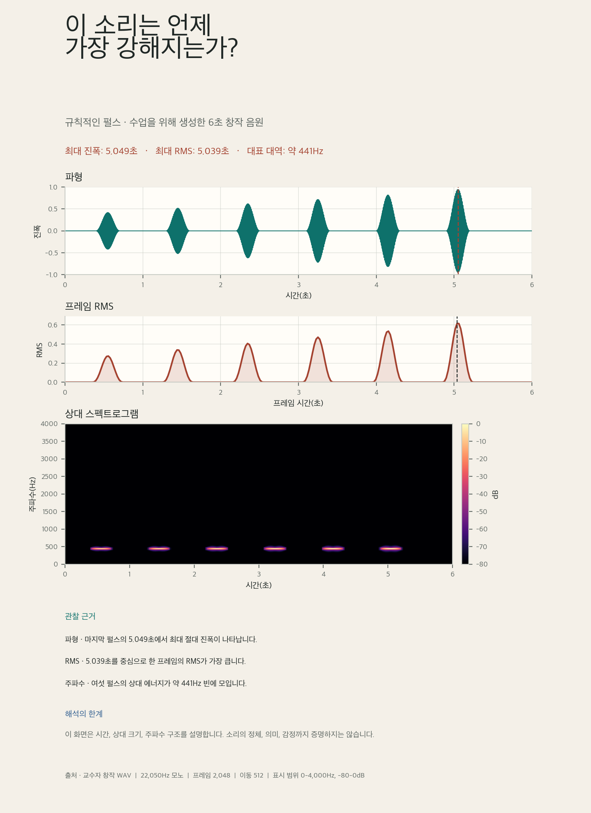

입력 확인에서 저장 검증까지 끊기지 않는 소리 시각화 코드 읽기
오늘의 학습 목표
source_path와 출처 메타데이터를 분리해 기록하고 원본 파일이 바뀌지 않았는지 확인할 수 있습니다.librosa.load(sr=None, mono=True)의 두 설정을 설명하고y와sr의 출력 형태를 확인할 수 있습니다.- 샘플 번호를 초 단위 시간으로 바꾸고 최대 절대 진폭의 시점을 계산할 수 있습니다.
- 프레임별 RMS와 시간축을
time_sec,rms두 열의 DataFrame으로 만들 수 있습니다. - STFT 복소수 행렬을 진폭과 상대 dB로 바꾸어 고정된 시간·주파수·색상 범위의 스펙트로그램을 만들 수 있습니다.
- 세 그래프, 수치 관찰, 분석 한계, 출처와 규칙을 1600 × 2200 PNG에 배치하고 저장 파일을 다시 열어 검증할 수 있습니다.
- 0-7분환경·원본
도구와 글꼴을 준비하고 WAV·출처를 연결합니다.
- 7-16분불러오기·검증
y,sr, 모양·자료형·길이를 확인합니다. - 16-25분파형·봉우리
샘플 시간축과 최대 절대 진폭 시점을 만듭니다.
- 25-34분RMS 표
프레임별 크기와 최대 RMS 시간을 계산합니다.
- 34-43분스펙트로그램
STFT를 -80~0dB의 시간-주파수 화면으로 바꿉니다.
- 43-48분포스터 구성
세 그래프와 수치 관찰·한계·출처를 배치합니다.
- 48-50분저장·검증
PNG 크기와 원본 보존을 자동으로 검사합니다.
수업 운영: 기본 50분과 확장 60분
기본 50분에는 CELL 1A부터 CELL 7까지 위에서 아래로 실행합니다. 각 셀의 예상 수량과 자동 검사를 확인한 뒤 다음 셀로 이동합니다. 모든 확인이 끝난 경우에만 50-60분 확장에서 세 수업 창작 음원을 같은 축과 하나의 dB 기준으로 비교합니다.
오늘 코드 전체를 한 문장으로 읽기
6초 WAV를 132,300개의 시간 샘플로 불러오고, 259개의 겹치는 프레임과 1,025 × 259 시간-주파수 행렬로 요약한 뒤, 파형·RMS·상대 스펙트로그램을 1600 × 2200 포스터에 저장합니다.

0-7분 · CELL 1: 도구·글꼴·원본 WAV와 메타데이터 준비하기
새 Colab 노트북을 열고 코드 셀을 두 개 만듭니다. CELL 1A는 수업에서 검증한 librosa 버전과 한글 글꼴을 준비합니다. 느낌표로 시작하는 두 줄은 Python 문법을 연습하는 코드가 아니라 Colab 실행 환경에 필요한 도구를 설치하는 명령입니다.
CELL 1A · librosa 0.11.0과 나눔고딕 설치
!pip -q install "librosa==0.11.0" "soundfile==0.13.1"
!apt-get -qq install fonts-nanum설치가 끝나고 셀 왼쪽의 실행 표시가 멈출 때까지 기다립니다. 경고가 몇 줄 보여도 마지막에 붉은 오류 문장이 없다면 다음 셀로 이동합니다. 런타임을 초기화한 경우에는 이 셀부터 다시 실행합니다.
CELL 1B · 라이브러리, 출처 정보, 파일 경로와 재생 준비
from hashlib import sha256
from pathlib import Path
from urllib.request import urlretrieve
import librosa
import librosa.display
import matplotlib.pyplot as plt
import matplotlib.font_manager as font_manager
import numpy as np
import pandas as pd
import soundfile as sf
from IPython.display import Audio, display
from PIL import Image
font_candidates = [
Path("/usr/share/fonts/truetype/nanum/NanumGothic.ttf"),
Path("/System/Library/Fonts/AppleSDGothicNeo.ttc"),
Path("C:/Windows/Fonts/malgun.ttf"),
]
korean_font_path = next(
(path for path in font_candidates if path.is_file()),
None,
)
if korean_font_path is not None:
font_manager.fontManager.addfont(str(korean_font_path))
korean_font_name = font_manager.FontProperties(
fname=str(korean_font_path)
).get_name()
else:
korean_font_name = "DejaVu Sans"
print("한글 글꼴을 찾지 못했습니다. CELL 1A를 다시 실행하세요.")
plt.rcParams["font.family"] = korean_font_name
plt.rcParams["axes.unicode_minus"] = False
audio_title = "규칙적인 펄스"
audio_provider = "Contents Programming Practice Week 13 · 교수자 창작 자료"
use_terms = "교육 목적의 분석·시각화·제출 허용"
generation_note = "440Hz 펄스 6개를 코드로 생성"
analysis_question = "이 소리는 언제 가장 강해지는가?"
source_url = (
"https://creativeengineer-kimjungho.com/"
"teaching/contents-programming/assets/"
"week-13-regular-pulses.wav"
)
source_path = Path("week-13-regular-pulses.wav")
if not source_path.is_file():
urlretrieve(source_url, source_path)
original_file_bytes = source_path.read_bytes()
original_sha256 = sha256(original_file_bytes).hexdigest()
assert source_path.is_file()
assert source_path.stat().st_size == 264_644
assert original_sha256 == (
"2b7bfe89e2287ae63812a27377922ef0959f43f5ab4fbcfa6761bb8eac445201"
)
print("제목:", audio_title)
print("출처:", audio_provider)
print("이용 조건:", use_terms)
print("파일:", source_path)
print("파일 크기:", source_path.stat().st_size, "bytes")
print("SHA-256 앞 12자리:", original_sha256[:12])
display(Audio(filename=str(source_path)))Path는 파일 경로와 존재 여부를 확인합니다. urlretrieve()는 파일이 현재 노트북에 없을 때 수업 사이트에서 내려받습니다. sha256은 파일 내용으로 긴 식별값을 만드는 도구입니다. 이후 같은 값을 다시 계산하면 분석 중 원본 WAV가 바뀌지 않았음을 확인할 수 있습니다.
| 이름 | 담는 내용 | 분리하는 이유 |
|---|---|---|
source_path | 현재 런타임의 WAV 파일 위치 | 오디오 배열과 파일 경로를 혼동하지 않기 위해 |
audio_title | 규칙적인 펄스 | 포스터 제목과 자료 설명에 사용하기 위해 |
audio_provider | 제공자와 수업 자료 정보 | 누가 만든 자료인지 밝히기 위해 |
use_terms | 교육 목적 이용 조건 | 분석과 제출이 허용되는 범위를 기록하기 위해 |
original_file_bytes | 분석 전 파일의 바이트 사본 | 분석 후 원본이 그대로인지 비교하기 위해 |
original_sha256 | 원본 내용의 디지털 지문 | 수업 제공 파일과 정확히 같은지 확인하기 위해 |
ModuleNotFoundError: No module named 'librosa'가 보일 때
CELL 1A의 첫 줄이 끝나기 전에 CELL 1B를 실행했거나 런타임이 초기화되었습니다. CELL 1A를 다시 실행하고 설치 표시가 멈춘 뒤 CELL 1B를 실행합니다.
HTTPError 또는 URLError가 보일 때
네트워크가 불안정하거나 수업 사이트에 연결되지 않은 상태입니다. 위의 ‘공통 WAV 내려받기’에서 파일을 받은 뒤 Colab 왼쪽 파일 영역에 업로드하고 파일명을 week-13-regular-pulses.wav로 유지합니다. 업로드가 끝나면 CELL 1B를 다시 실행합니다.
파일 크기나 SHA-256 검사에서 AssertionError가 보일 때
같은 이름의 다른 파일이 현재 런타임에 있거나 다운로드가 완전히 끝나지 않았습니다. Colab 파일 영역에서 해당 WAV 한 개만 삭제한 뒤 CELL 1B를 다시 실행해 수업 파일을 새로 받습니다. 검사 숫자를 직접 바꾸지 않습니다.
7-16분 · CELL 2: 원래 샘플링 레이트로 불러오고 구조 검증하기
librosa.load() 공식 문서 ↗에 따르면 기본 설정은 오디오를 지정된 샘플링 레이트로 바꾸고 모노로 불러옵니다. 오늘은 원본의 22,050Hz를 그대로 유지해야 하므로 sr=None을 명시합니다. mono=True는 여러 채널이 들어와도 한 채널로 합친다는 규칙이며, 오늘 원본은 이미 모노입니다.
source_info = sf.info(str(source_path))
y, sr = librosa.load(
source_path,
sr=None,
mono=True,
)
loaded_y_snapshot = y.copy()
sample_count = len(y)
duration_seconds = sample_count / sr
assert source_info.channels == 1
assert source_info.samplerate == 22_050
assert source_info.frames == 132_300
assert y.ndim == 1
assert y.shape == (132_300,)
assert y.dtype == np.float32
assert sr == 22_050
assert sample_count == 132_300
assert np.isclose(duration_seconds, 6.0)
assert source_path.read_bytes() == original_file_bytes
print("원본 채널:", source_info.channels)
print("y.shape:", y.shape)
print("y.dtype:", y.dtype)
print("sr:", sr, "Hz")
print("샘플 수:", sample_count)
print("재생 시간:", duration_seconds, "초")
print("진폭 범위:", float(y.min()), "~", float(y.max()))원본 채널: 1
y.shape: (132300,)
y.dtype: float32
sr: 22050 Hz
샘플 수: 132300
재생 시간: 6.0 초
진폭 범위: 약 -0.94998 ~ 0.94998
y는 시간 순서대로 놓인 진폭 배열입니다. 변수 이름은 짧지만 132,300개의 수치를 담고 있습니다. sr은 이 배열을 1초에 몇 개씩 읽어야 하는지 알려 주는 정수입니다. 둘을 함께 가져야 샘플 번호를 실제 시간으로 바꿀 수 있습니다.
| 출력 | 읽는 방법 | 확인되는 사실 |
|---|---|---|
(132300,) | 쉼표 앞 숫자가 배열 길이이며 한 차원 배열임을 뜻함 | 모노 시계열 한 줄 |
float32 | 소수점이 있는 32비트 부동소수점 수 | librosa가 분석용 진폭 수치로 변환 |
22050 | 1초에 읽는 샘플 수 | 원본 샘플링 레이트 유지 |
6.0 | 132300 ÷ 22050 | 샘플 수와 레이트가 재생 시간과 일치 |
sr=None과 sr=22050은 오늘 결과는 같아도 뜻은 다르다
오늘 원본 자체가 22,050Hz이므로 두 설정의 출력 수량은 같습니다. 그러나 sr=None은 파일마다 원래 레이트를 유지하고, sr=22050은 어떤 입력이 와도 22,050Hz로 바꾸라는 뜻입니다. 분석 규칙을 정확히 전달하기 위해 의도에 맞는 설정을 씁니다.
NameError: name 'source_path' is not defined가 보일 때
CELL 1B가 실행되지 않았거나 런타임이 초기화되었습니다. CELL 1A와 CELL 1B를 위에서부터 실행한 뒤 CELL 2를 다시 실행합니다.
샘플 수가 132,300개가 아니거나 재생 시간이 6초가 아닐 때
다른 WAV를 같은 파일명으로 올렸거나 librosa.load()에서 sr=None을 바꾸었습니다. CELL 1B의 파일 검사부터 다시 통과시키고 CELL 2의 불러오기 코드를 그대로 사용합니다.
16-25분 · CELL 3: 샘플 시간축과 최대 절대 진폭 시점 만들기
배열의 첫 값은 샘플 번호 0, 다음 값은 1입니다. 샘플 번호를 샘플링 레이트로 나누면 초 단위 시간이 됩니다. np.arange(len(y))가 0부터 132,299까지의 번호를 만들고, 전체를 sr로 나누면 각 샘플과 같은 길이의 시간 배열이 생깁니다.
sample_times = np.arange(len(y)) / sr
peak_sample_index = int(np.argmax(np.abs(y)))
peak_time_seconds = peak_sample_index / sr
peak_signed_amplitude = float(y[peak_sample_index])
peak_absolute_amplitude = float(np.abs(y[peak_sample_index]))
wave_fig, wave_ax = plt.subplots(
figsize=(12, 4.2),
facecolor="#f4f0e8",
)
librosa.display.waveshow(
y,
sr=sr,
ax=wave_ax,
color="#0e716b",
)
wave_ax.axvline(
peak_time_seconds,
color="#a44230",
linewidth=1.5,
linestyle="--",
)
wave_ax.annotate(
f"최대 |진폭| · {peak_time_seconds:.3f}초",
xy=(peak_time_seconds, peak_signed_amplitude),
xytext=(3.55, 0.72),
arrowprops={"arrowstyle": "->", "color": "#a44230"},
color="#a44230",
fontsize=10,
fontweight="bold",
)
wave_ax.set(
title="규칙적인 펄스 · 전체 파형",
xlabel="시간(초)",
ylabel="정규화된 진폭",
xlim=(0, duration_seconds),
ylim=(-1, 1),
)
wave_ax.grid(color="#c7cbc4", linewidth=0.7, alpha=0.55)
wave_ax.spines[["top", "right"]].set_visible(False)
wave_fig.tight_layout()
assert len(sample_times) == len(y)
assert np.isclose(sample_times[0], 0.0)
assert peak_sample_index == 111_340
assert np.isclose(peak_time_seconds, 5.0494331066)
assert np.isclose(peak_absolute_amplitude, 0.9499816895)
assert np.array_equal(y, loaded_y_snapshot)
print("첫 샘플 시간:", sample_times[0], "초")
print("마지막 샘플 시간:", sample_times[-1], "초")
print("최대 절대 진폭 샘플 번호:", peak_sample_index)
print("최대 절대 진폭 시점:", round(peak_time_seconds, 6), "초")
print("그 시점의 진폭:", round(peak_signed_amplitude, 6))
wave_fig첫 샘플 시간: 0.0 초
마지막 샘플 시간: 약 5.999955 초
최대 절대 진폭 샘플 번호: 111340
최대 절대 진폭 시점: 5.049433 초
그 시점의 진폭: -0.949982
마지막 샘플 시간이 정확히 6.0초보다 한 샘플 간격만큼 작은 것은 정상입니다. 첫 샘플이 0초에 놓이고 132,300번째 위치가 아니라 132,299번째 위치가 마지막이기 때문입니다. 파일의 전체 재생 시간은 샘플 개수를 레이트로 나눈 6초입니다.
librosa.display.waveshow() 공식 문서 ↗의 함수는 짧은 구간에서는 개별 샘플을, 긴 구간에서는 화면 효율을 위해 진폭의 윤곽을 표시합니다. 따라서 전체 132,300개 점이 각각 분리되어 보이지 않아도 데이터가 사라진 것은 아닙니다.
확인: 최대 진폭 시점이 아니라 최대 절대 진폭 시점을 찾는 이유는 무엇인가?
진폭의 음수는 반대 진동 방향일 뿐 작은 신호가 아닙니다. np.abs(y)로 기준 0에서 떨어진 거리를 비교해야 -0.95와 0.95를 같은 크기로 다룰 수 있습니다.
파형에 세로선이 보이지 않거나 시점이 달라질 때
CELL 2의 입력 수량이 모두 맞는지 먼저 확인합니다. 그다음 np.argmax(np.abs(y))에서 np.abs()가 빠지지 않았는지, 시간 계산이 peak_sample_index / sr인지 확인합니다.
25-34분 · CELL 4: 프레임별 RMS와 시간표 만들기
librosa.feature.rms() 공식 문서 ↗를 사용해 2,048샘플 프레임마다 RMS를 계산합니다. 반환값은 행이 하나인 2차원 배열이므로 뒤의 [0]으로 첫 행을 꺼내 1차원 배열로 만듭니다.
frame_length = 2_048
hop_length = 512
rms_values = librosa.feature.rms(
y=y,
frame_length=frame_length,
hop_length=hop_length,
center=True,
)[0]
rms_times = librosa.times_like(
rms_values,
sr=sr,
hop_length=hop_length,
)
rms_df = pd.DataFrame(
{
"time_sec": rms_times,
"rms": rms_values,
}
)
peak_rms_row = rms_df.loc[rms_df["rms"].idxmax()]
peak_rms_time_seconds = float(peak_rms_row["time_sec"])
peak_rms_value = float(peak_rms_row["rms"])
frame_duration_seconds = frame_length / sr
hop_duration_seconds = hop_length / sr
rms_fig, rms_ax = plt.subplots(
figsize=(12, 4.2),
facecolor="#f4f0e8",
)
rms_ax.plot(
rms_df["time_sec"],
rms_df["rms"],
color="#a44230",
linewidth=2.2,
)
rms_ax.fill_between(
rms_df["time_sec"],
rms_df["rms"],
color="#a44230",
alpha=0.16,
)
rms_ax.axvline(
peak_rms_time_seconds,
color="#1f2725",
linewidth=1.3,
linestyle="--",
)
rms_ax.set(
title="2,048샘플 프레임별 RMS",
xlabel="프레임 시간(초)",
ylabel="RMS",
xlim=(0, duration_seconds),
ylim=(0, rms_df["rms"].max() * 1.12),
)
rms_ax.grid(color="#c7cbc4", linewidth=0.7, alpha=0.55)
rms_ax.spines[["top", "right"]].set_visible(False)
rms_fig.tight_layout()
assert list(rms_df.columns) == ["time_sec", "rms"]
assert len(rms_df) == 259
assert np.isclose(frame_duration_seconds, 0.0928798186)
assert np.isclose(hop_duration_seconds, 0.0232199546)
assert np.isclose(peak_rms_time_seconds, 5.0387301587)
assert np.isclose(peak_rms_value, 0.6166670322)
assert np.array_equal(y, loaded_y_snapshot)
print("RMS 프레임 수:", len(rms_df))
print("프레임 길이:", round(frame_duration_seconds, 6), "초")
print("프레임 이동 간격:", round(hop_duration_seconds, 6), "초")
print("최대 RMS 시점:", round(peak_rms_time_seconds, 6), "초")
print("최대 RMS 값:", round(peak_rms_value, 6))
display(rms_df.head(8).round(6))
rms_figRMS 프레임 수: 259
프레임 길이: 0.09288 초
프레임 이동 간격: 0.02322 초
최대 RMS 시점: 5.03873 초
최대 RMS 값: 0.616667
librosa.times_like() 공식 문서 ↗는 프레임 번호 0, 1, 2를 샘플링 레이트와 이동 간격에 맞춘 초 단위 값으로 바꿉니다. rms_df의 한 행은 샘플 하나가 아니라 한 프레임의 시간과 RMS를 짝지은 기록입니다.
최대 샘플 5.049초와 최대 RMS 5.039초가 다른 이유
최대 샘플은 한 점의 위치입니다. 최대 RMS는 그 주변 약 0.093초 구간 전체가 가장 강한 프레임의 대표 시간입니다. 서로 다른 범위를 측정하므로 시간이 완전히 같을 필요가 없습니다. 두 값이 모두 마지막 펄스 안에 있다는 점이 중요한 일치입니다.
RMS 프레임 수가 259가 아니라 1로 보일 때
librosa.feature.rms(...)[0]의 [0]은 프레임 한 개를 고르는 것이 아니라 반환된 첫 번째 특징 행 전체를 꺼냅니다. rms_values.shape가 (259,)인지 확인합니다. len(rms_values[0])처럼 첫 숫자에 다시 길이를 묻지 않습니다.
KeyError: 'rms'가 보일 때
DataFrame의 열 이름을 "time_sec"와 "rms"로 만들었는지 확인합니다. 대문자 RMS와 소문자 rms는 서로 다른 이름입니다. CELL 4 전체를 다시 실행합니다.
34-43분 · CELL 5: STFT를 상대 dB 스펙트로그램으로 바꾸기
librosa.stft() 공식 문서 ↗는 시간 신호를 복소수 시간-주파수 행렬로 바꿉니다. 복소수는 각 주파수 성분의 크기와 위상 정보를 함께 담습니다. 오늘 화면에는 크기가 필요하므로 np.abs()로 진폭 행렬을 얻습니다.
stft_matrix = librosa.stft(
y,
n_fft=frame_length,
hop_length=hop_length,
win_length=frame_length,
window="hann",
center=True,
)
magnitude = np.abs(stft_matrix)
spectrogram_db = librosa.amplitude_to_db(
magnitude,
ref=np.max,
top_db=80,
)
frequency_bins = librosa.fft_frequencies(
sr=sr,
n_fft=frame_length,
)
dominant_row, dominant_column = np.unravel_index(
int(np.argmax(magnitude)),
magnitude.shape,
)
dominant_frequency_hz = float(frequency_bins[dominant_row])
dominant_frame_time = dominant_column * hop_length / sr
spec_fig, spec_ax = plt.subplots(
figsize=(12, 5.5),
facecolor="#f4f0e8",
)
spec_image = librosa.display.specshow(
spectrogram_db,
sr=sr,
hop_length=hop_length,
x_axis="time",
y_axis="hz",
cmap="magma",
vmin=-80,
vmax=0,
ax=spec_ax,
)
spec_ax.set(
title="규칙적인 펄스 · 상대 스펙트로그램",
xlabel="시간(초)",
ylabel="주파수(Hz)",
xlim=(0, duration_seconds),
ylim=(0, 4_000),
)
colorbar = spec_fig.colorbar(
spec_image,
ax=spec_ax,
pad=0.02,
format="%+2.0f dB",
)
colorbar.set_label("최대 진폭 기준 상대 dB")
spec_fig.tight_layout()
assert np.iscomplexobj(stft_matrix)
assert stft_matrix.shape == (1_025, 259)
assert magnitude.shape == (1_025, 259)
assert spectrogram_db.shape == (1_025, 259)
assert np.isclose(spectrogram_db.max(), 0.0)
assert np.isclose(spectrogram_db.min(), -80.0)
assert np.isclose(dominant_frequency_hz, 441.4306640625)
assert np.isclose(dominant_frame_time, 5.0387301587)
assert np.array_equal(y, loaded_y_snapshot)
print("STFT 모양:", stft_matrix.shape)
print("STFT 자료형:", stft_matrix.dtype)
print("상대 dB 범위:", float(spectrogram_db.min()), "~", float(spectrogram_db.max()))
print("가장 강한 주파수 빈:", round(dominant_frequency_hz, 3), "Hz")
print("그 프레임 시간:", round(dominant_frame_time, 6), "초")
spec_figSTFT 모양: (1025, 259)
STFT 자료형: complex64
상대 dB 범위: -80.0 ~ 0.0
가장 강한 주파수 빈: 441.431 Hz
그 프레임 시간: 5.03873 초
행 1,025개는 2,048샘플 프레임에서 얻은 서로 다른 주파수 구간입니다. 실수 신호의 대칭되는 절반을 반복해 그리지 않으므로 2,048 ÷ 2 + 1 = 1,025가 됩니다. 열 259개는 RMS에서 사용한 것과 같은 시간 프레임입니다.
librosa.amplitude_to_db() 공식 문서 ↗의 ref=np.max는 이 행렬의 최댓값을 0dB로 둡니다. top_db=80은 최댓값보다 80dB 이상 작은 값을 -80dB 하한으로 모읍니다. 이어서 librosa.display.specshow() 공식 문서 ↗가 행과 열을 Hz와 초 단위 축으로 번역해 표시합니다.
| 변수 | 자료형·모양 | 뜻 | 화면 사용 |
|---|---|---|---|
stft_matrix | 복소수 · 1,025 × 259 | 크기와 위상을 담은 시간-주파수 결과 | 직접 색으로 그리지 않음 |
magnitude | 양수 실수 · 1,025 × 259 | 복소수의 절댓값인 진폭 | dB 변환의 입력 |
spectrogram_db | -80~0 실수 · 1,025 × 259 | 최댓값에 대한 상대 진폭 | 스펙트로그램의 색상 |
frequency_bins | 1,025개 Hz 값 | 각 행이 대표하는 주파수 | 주된 대역 약 441Hz 계산 |
스펙트로그램이 모두 검게 보일 때
np.abs(stft_matrix)로 진폭을 만든 뒤 librosa.amplitude_to_db(magnitude, ref=np.max, top_db=80)를 실행했는지 확인합니다. 원본 복소수 행렬을 바로 그리거나 vmin과 vmax의 순서를 바꾸면 올바른 색 범위가 나오지 않습니다.
세로축이 0-11,025Hz 전체로 보일 때
STFT 계산은 정상입니다. 오늘 포스터는 낮은 주파수 구조를 확대해 비교하므로 spec_ax.set(..., ylim=(0, 4_000))이 필요합니다. 이 설정은 표시 범위만 바꾸며 원본 행렬의 높은 주파수 행을 삭제하지 않습니다.
확인: 가장 강한 빈 441.431Hz를 정확한 원음 441.431Hz라고 단정해도 되는가?
그렇게 단정하지 않습니다. 입력은 440Hz로 생성했지만 STFT의 주파수축은 일정한 간격의 빈으로 나뉘므로 가장 가까운 빈 중심인 약 441.431Hz에 에너지가 모입니다. 이 값은 현재 프레임 길이에서의 분석 격자입니다.
43-48분 · CELL 6: 세 그래프와 수치 관찰을 포스터에 배치하기
앞에서 계산한 배열을 새 Figure 안에 다시 그립니다. 상단에는 질문과 자료 규격, 중앙에는 파형·RMS·스펙트로그램, 하단에는 실제 수치가 포함된 관찰 세 문장과 해석의 한계, 출처와 분석 규칙을 배치합니다. 새로운 계산을 임의로 추가하지 않고 앞 셀의 변수들을 다시 사용하므로 각 화면의 값이 일치합니다.
import textwrap
waveform_observation = (
f"최대 절대 진폭은 {peak_time_seconds:.3f}초에 나타나며, "
"마지막 펄스가 가장 크다."
)
rms_observation = (
f"최대 RMS 프레임은 {peak_rms_time_seconds:.3f}초로, "
"마지막 펄스 구간에 놓인다."
)
frequency_observation = (
f"여섯 펄스 모두 약 {dominant_frequency_hz:.0f}Hz 대역이 "
"상대적으로 강하다."
)
analysis_limit = (
"세 화면은 시간·상대 크기·주파수 구조를 보여 주지만, "
"소리의 정체·의미·감정을 자동으로 증명하지 않는다."
)
method_note = (
"22,050Hz 모노 · 6초 · 132,300샘플 · "
"frame 2,048 · hop 512 · 표시 0-4,000Hz · -80~0dB"
)
source_note = audio_title + " · " + audio_provider + " · " + use_terms
def wrap_note(text, width=60):
return "\n".join(
textwrap.wrap(
text,
width=width,
break_long_words=False,
break_on_hyphens=False,
)
)
poster_fig = plt.figure(
figsize=(8, 11),
dpi=200,
facecolor="#f4f0e8",
)
poster_grid = poster_fig.add_gridspec(
nrows=3,
ncols=1,
left=0.13,
right=0.89,
bottom=0.32,
top=0.78,
height_ratios=[0.9, 0.72, 1.45],
hspace=0.72,
)
poster_wave_ax = poster_fig.add_subplot(poster_grid[0, 0])
poster_rms_ax = poster_fig.add_subplot(poster_grid[1, 0])
poster_spec_ax = poster_fig.add_subplot(poster_grid[2, 0])
poster_fig.text(
0.09,
0.955,
"SOUND AS DATA · WEEK 13",
fontsize=10,
fontweight="bold",
color="#0e716b",
)
poster_fig.text(
0.09,
0.915,
analysis_question,
fontsize=20,
fontweight="bold",
color="#1f2725",
)
poster_fig.text(
0.09,
0.878,
"규칙적인 펄스 · 6초 · 22,050Hz 모노 · 교수자 창작 WAV",
fontsize=8.4,
color="#5d6662",
)
poster_fig.text(
0.09,
0.842,
(
f"최대 |진폭| {peak_time_seconds:.3f}초 · "
f"최대 RMS {peak_rms_time_seconds:.3f}초 · "
f"주된 빈 약 {dominant_frequency_hz:.0f}Hz"
),
fontsize=8.8,
fontweight="bold",
color="#a44230",
)
librosa.display.waveshow(
y,
sr=sr,
ax=poster_wave_ax,
color="#0e716b",
)
poster_wave_ax.axvline(
peak_time_seconds,
color="#a44230",
linewidth=1.0,
linestyle="--",
)
poster_wave_ax.set(
title="전체 파형",
xlabel="시간(초)",
ylabel="진폭",
xlim=(0, 6),
ylim=(-1, 1),
)
poster_wave_ax.tick_params(labelsize=7)
poster_wave_ax.title.set_fontsize(10)
poster_wave_ax.spines[["top", "right"]].set_visible(False)
poster_wave_ax.grid(color="#c7cbc4", linewidth=0.6, alpha=0.5)
poster_rms_ax.plot(
rms_df["time_sec"],
rms_df["rms"],
color="#a44230",
linewidth=1.8,
)
poster_rms_ax.fill_between(
rms_df["time_sec"],
rms_df["rms"],
color="#a44230",
alpha=0.14,
)
poster_rms_ax.axvline(
peak_rms_time_seconds,
color="#1f2725",
linewidth=0.9,
linestyle="--",
)
poster_rms_ax.set(
title="프레임 RMS",
xlabel="프레임 시간(초)",
ylabel="RMS",
xlim=(0, 6),
ylim=(0, rms_df["rms"].max() * 1.12),
)
poster_rms_ax.tick_params(labelsize=7)
poster_rms_ax.title.set_fontsize(10)
poster_rms_ax.spines[["top", "right"]].set_visible(False)
poster_rms_ax.grid(color="#c7cbc4", linewidth=0.6, alpha=0.5)
poster_spec_image = librosa.display.specshow(
spectrogram_db,
sr=sr,
hop_length=hop_length,
x_axis="time",
y_axis="hz",
cmap="magma",
vmin=-80,
vmax=0,
ax=poster_spec_ax,
)
poster_spec_ax.set(
title="상대 스펙트로그램",
xlabel="시간(초)",
ylabel="주파수(Hz)",
xlim=(0, 6),
ylim=(0, 4_000),
)
poster_spec_ax.tick_params(labelsize=7)
poster_spec_ax.title.set_fontsize(10)
poster_colorbar = poster_fig.colorbar(
poster_spec_image,
ax=poster_spec_ax,
pad=0.025,
format="%+2.0f dB",
)
poster_colorbar.set_label("상대 dB", fontsize=7)
poster_colorbar.ax.tick_params(labelsize=6.5)
poster_fig.text(
0.09,
0.270,
"관찰 근거 · 파형",
fontsize=8,
fontweight="bold",
color="#0e716b",
)
poster_fig.text(
0.09,
0.250,
wrap_note(waveform_observation),
fontsize=7.6,
color="#1f2725",
)
poster_fig.text(
0.09,
0.215,
"관찰 근거 · 프레임 RMS",
fontsize=8,
fontweight="bold",
color="#0e716b",
)
poster_fig.text(
0.09,
0.195,
wrap_note(rms_observation),
fontsize=7.6,
color="#1f2725",
)
poster_fig.text(
0.09,
0.160,
"관찰 근거 · 주파수",
fontsize=8,
fontweight="bold",
color="#0e716b",
)
poster_fig.text(
0.09,
0.140,
wrap_note(frequency_observation),
fontsize=7.6,
color="#1f2725",
)
poster_fig.text(
0.09,
0.102,
"해석의 한계",
fontsize=8,
fontweight="bold",
color="#a44230",
)
poster_fig.text(
0.09,
0.081,
wrap_note(analysis_limit),
fontsize=7.3,
color="#1f2725",
)
poster_fig.text(
0.09,
0.040,
wrap_note(method_note + " · " + source_note, width=82),
fontsize=6.1,
color="#5d6662",
)
assert len(poster_wave_ax.collections) >= 1
assert len(poster_rms_ax.lines[0].get_xdata()) == 259
assert len(poster_spec_ax.collections) >= 1
print("포스터 구성이 준비되었습니다. CELL 7에서 PNG로 저장합니다.")
poster_fig| 위치 | 내용 | 독자가 확인할 질문 |
|---|---|---|
| 상단 | 질문, 음원 제목, 길이, 레이트, 채널, 핵심 수치 | 무엇을 어떤 조건으로 분석했는가? |
| 중앙 위 | 0-6초 파형과 최대 절대 진폭 시점 | 언제 신호가 크게 움직이는가? |
| 중앙 가운데 | 프레임 RMS와 최대 프레임 시점 | 어느 짧은 구간의 대표 크기가 큰가? |
| 중앙 아래 | 0-4,000Hz, -80~0dB 스펙트로그램 | 언제 어느 주파수 대역이 강한가? |
| 하단 | 관찰 세 문장, 한계, 출처, 프레임과 표시 규칙 | 무엇을 확인했고 무엇을 단정할 수 없는가? |
비교할 때 고정해야 하는 세 범위
서로 다른 음원을 비교할 때 파형의 시간축은 0-6초, 스펙트로그램의 주파수축은 0-4,000Hz, 색상 범위는 -80~0dB로 유지합니다. 한쪽만 확대하거나 더 밝은 색 범위를 쓰면 같은 차이가 과장되거나 축소되어 보일 수 있습니다.
NameError: name 'spectrogram_db' is not defined가 보일 때
CELL 5가 실행되지 않았거나 런타임이 초기화되었습니다. CELL 1A부터 CELL 5까지 위에서 아래로 다시 실행한 뒤 CELL 6을 실행합니다. 아래 셀만 반복 실행해 중간 변수를 건너뛰지 않습니다.
포스터의 한글이 네모로 보일 때
CELL 1A의 나눔고딕 설치와 CELL 1B의 글꼴 등록을 다시 실행한 뒤 CELL 6을 다시 실행합니다. 이미 만들어진 Figure는 글꼴 설정을 나중에 바꾸어도 자동으로 다시 그려지지 않습니다.
하단 설명 문장이 서로 겹칠 때
2교시에는 제공된 관찰 문장과 wrap_note()를 그대로 사용합니다. 임의로 긴 설명을 추가하면 배치가 달라집니다. 3교시 개인 문장은 노트북이 안내하는 길이 범위 안에서 작성하고 저장 전 글자 잘림을 육안으로 확인합니다.
48-50분 · CELL 7: PNG를 저장하고 원본·수량·크기 검증하기
노트북에 Figure가 보이는 것과 PNG 파일이 저장된 것은 다른 상태입니다. savefig()로 저장한 뒤 Pillow의 Image.open()으로 파일을 다시 열어 실제 픽셀 크기를 확인합니다. 원본 WAV의 바이트와 SHA-256도 다시 비교합니다.
poster_filename = "week13_demo_sound_poster.png"
poster_fig.savefig(
poster_filename,
dpi=200,
facecolor=poster_fig.get_facecolor(),
)
with Image.open(poster_filename) as saved_poster:
saved_poster_size = saved_poster.size
saved_poster_format = saved_poster.format
current_file_bytes = source_path.read_bytes()
current_sha256 = sha256(current_file_bytes).hexdigest()
assert Path(poster_filename).is_file()
assert Path(poster_filename).stat().st_size > 50_000
assert saved_poster_size == (1_600, 2_200)
assert saved_poster_format == "PNG"
assert current_file_bytes == original_file_bytes
assert current_sha256 == original_sha256
assert np.array_equal(y, loaded_y_snapshot)
assert sample_count == 132_300
assert len(rms_df) == 259
assert stft_matrix.shape == (1_025, 259)
assert np.isclose(spectrogram_db.min(), -80.0)
assert np.isclose(spectrogram_db.max(), 0.0)
print("PNG 파일:", poster_filename)
print("PNG 크기:", saved_poster_size)
print("RMS 프레임:", len(rms_df))
print("STFT 모양:", stft_matrix.shape)
print("원본 SHA-256 유지:", current_sha256 == original_sha256)
print("모든 저장 검사를 통과했습니다.")
try:
from google.colab import files
except ModuleNotFoundError:
print("Colab이 아니므로 자동 다운로드를 건너뜁니다.")
else:
files.download(poster_filename)완료 출력
PNG 크기: (1600, 2200), RMS 프레임: 259, STFT 모양: (1025, 259), 원본 SHA-256 유지: True, 모든 저장 검사를 통과했습니다.가 차례로 보이면 2교시 코드가 완성된 것입니다.
PNG 크기가 1600 × 2200이 아닐 때
CELL 6의 figsize=(8, 11)과 dpi=200, CELL 7의 dpi=200을 확인합니다. bbox_inches="tight"를 추가하면 여백에 따라 픽셀 크기가 달라지므로 이번 저장 코드에는 사용하지 않습니다.
원본 SHA-256 유지가 False이거나 검사에 실패할 때
분석 과정에서 source_path에 새 오디오를 저장했거나 같은 이름의 파일을 덮어썼습니다. 런타임을 초기화하고 CELL 1B에서 수업 WAV를 다시 내려받습니다. 분석 결과는 다른 변수와 PNG 파일에 저장하고 원본 WAV 경로에는 쓰지 않습니다.
3교시 사운드 패턴 포스터 미션의 고정 계약
| 영역 | 고정 조건 | 확인 방법 |
|---|---|---|
| 입력 | 제공된 WAV 한 편, 22,050Hz, 모노, 132,300샘플, 6초 | 파일 지문, 메타데이터, y 수량 검사 |
| 파형 | 0-6초 전체와 최대 절대 진폭 시점 | 샘플 시간축 길이와 수치 주석 확인 |
| RMS | frame 2,048, hop 512, 최대 RMS 프레임 시간 | 프레임 수와 DataFrame 열 검사 |
| 스펙트로그램 | 같은 프레임 규칙, 0-4,000Hz, -80~0dB와 색상 막대 | 행렬 모양, 축·색상 범위와 육안 확인 |
| 포스터 | 1600 × 2200, 질문, 수치 관찰 세 문장, 한계, 출처, 규칙 | PNG 재열기와 텍스트 필드 검사 |
| 프로젝트 씨앗 | 질문, 입력, 권리, 규칙, 출력, 14주차 첫 행동 | HTML 필수 항목과 직접 열기 확인 |
50-60분 · 선택 확장: 세 음원을 같은 척도로 비교하기
세 WAV를 같은 0-6초 시간축, -1~1 진폭축, 0-4,000Hz 주파수축과 -80~0dB 색상 범위에 놓습니다. 이번에는 세 STFT의 최댓값 가운데 가장 큰 값을 하나의 공통 0dB 기준으로 사용합니다. 따라서 각 파일이 자신의 최댓값을 따로 0dB로 만드는 방식보다 색상 비교의 기준이 더 분명합니다.
comparison_sources = {
"규칙적인 펄스": (
"https://creativeengineer-kimjungho.com/"
"teaching/contents-programming/assets/"
"week-13-regular-pulses.wav"
),
"상승하는 음": (
"https://creativeengineer-kimjungho.com/"
"teaching/contents-programming/assets/"
"week-13-rising-tone.wav"
),
"저음·고음 교차 리듬": (
"https://creativeengineer-kimjungho.com/"
"teaching/contents-programming/assets/"
"week-13-alternating-bands.wav"
),
}
comparison_data = {}
for title, audio_url in comparison_sources.items():
comparison_path = Path(audio_url.rsplit("/", 1)[-1])
if not comparison_path.is_file():
urlretrieve(audio_url, comparison_path)
comparison_y, comparison_sr = librosa.load(
comparison_path,
sr=None,
mono=True,
)
comparison_stft = librosa.stft(
comparison_y,
n_fft=frame_length,
hop_length=hop_length,
win_length=frame_length,
window="hann",
center=True,
)
comparison_magnitude = np.abs(comparison_stft)
assert comparison_sr == 22_050
assert comparison_y.shape == (132_300,)
assert comparison_magnitude.shape == (1_025, 259)
comparison_data[title] = {
"y": comparison_y,
"sr": comparison_sr,
"magnitude": comparison_magnitude,
}
common_reference = max(
float(record["magnitude"].max())
for record in comparison_data.values()
)
comparison_fig, comparison_axes = plt.subplots(
nrows=3,
ncols=2,
figsize=(14, 12),
facecolor="#f4f0e8",
)
last_spec_image = None
for row_index, (title, record) in enumerate(comparison_data.items()):
comparison_y = record["y"]
comparison_sr = record["sr"]
comparison_magnitude = record["magnitude"]
comparison_db = librosa.amplitude_to_db(
comparison_magnitude,
ref=common_reference,
top_db=80,
)
wave_axis = comparison_axes[row_index, 0]
spec_axis = comparison_axes[row_index, 1]
librosa.display.waveshow(
comparison_y,
sr=comparison_sr,
ax=wave_axis,
color="#0e716b",
)
wave_axis.set(
title=f"{title} · 파형",
xlabel="시간(초)",
ylabel="진폭",
xlim=(0, 6),
ylim=(-1, 1),
)
wave_axis.grid(color="#c7cbc4", linewidth=0.6, alpha=0.5)
wave_axis.spines[["top", "right"]].set_visible(False)
last_spec_image = librosa.display.specshow(
comparison_db,
sr=comparison_sr,
hop_length=hop_length,
x_axis="time",
y_axis="hz",
cmap="magma",
vmin=-80,
vmax=0,
ax=spec_axis,
)
spec_axis.set(
title=f"{title} · 공통 기준 스펙트로그램",
xlabel="시간(초)",
ylabel="주파수(Hz)",
xlim=(0, 6),
ylim=(0, 4_000),
)
comparison_colorbar = comparison_fig.colorbar(
last_spec_image,
ax=comparison_axes[:, 1].tolist(),
pad=0.025,
format="%+2.0f dB",
)
comparison_colorbar.set_label("세 음원의 공통 최댓값 기준 상대 dB")
comparison_fig.suptitle(
"같은 축과 하나의 색상 기준으로 비교한 세 수업 창작 음원",
fontsize=17,
fontweight="bold",
y=0.995,
)
comparison_fig.subplots_adjust(
left=0.08,
right=0.88,
bottom=0.07,
top=0.95,
hspace=0.48,
wspace=0.28,
)
assert len(comparison_data) == 3
assert source_path.read_bytes() == original_file_bytes
print("비교 음원:", list(comparison_data.keys()))
print("모든 음원: 6초 · 22,050Hz · 모노 · 132,300샘플")
print("시간·진폭·주파수·dB 표시 범위를 고정했습니다.")
comparison_fig| 음원 | 파형에서 확인 | 스펙트로그램에서 확인 | 단정하지 않을 것 |
|---|---|---|---|
| 규칙적인 펄스 | 비슷한 간격의 여섯 덩어리와 커지는 윤곽 | 약 440Hz 높이에서 끊어지는 여섯 띠 | 펄스의 실제 악기나 감정 |
| 상승하는 음 | 시간 전체에 이어지는 진동 윤곽 | 낮은 주파수에서 높은 주파수로 올라가는 띠 | 상승이 긴장이나 희망을 뜻한다는 해석 |
| 저음·고음 교차 리듬 | 0.5초마다 이어지는 비슷한 크기의 구간 | 약 220Hz와 880Hz 높이가 번갈아 나타나는 띠 | 리듬을 만든 장치나 장르 |
같은 척도가 가능하게 한 비교 쓰기
세 음원 가운데 두 편을 고릅니다. 첫 문장에는 시간 또는 주파수의 구체적인 차이를 쓰고, 두 번째 문장에는 화면만으로 단정할 수 없는 내용을 씁니다. “더 예쁘다” 대신 초, Hz, 반복 횟수 또는 방향을 근거로 사용합니다.
예시 답안: 규칙적인 펄스와 상승하는 음 비교
“규칙적인 펄스는 약 0.9초 간격으로 분리된 여섯 개의 440Hz 부근 띠를 보이지만, 상승하는 음은 6초에 걸쳐 약 180Hz에서 1,200Hz 방향으로 이어지는 띠를 보인다. 이 차이는 시간·주파수 구조를 설명하지만 두 소리의 감정이나 사용 목적까지 증명하지 않는다.”
핵심 정리
source_path는 파일 위치이고y는 파일에서 읽은 진폭 배열이며sr은 1초당 샘플 수입니다.sr=None은 원래 샘플링 레이트를 유지하고mono=True는 한 채널 배열을 만듭니다.sample_times = np.arange(len(y)) / sr는 샘플 번호를 초 단위 위치로 바꿉니다.- 최대 절대 진폭은 한 샘플의 봉우리이고 최대 RMS는 짧은 프레임 전체의 대표 크기입니다.
librosa.times_like()는 프레임 번호를 이동 간격에 맞춘 시간으로 바꿉니다.- STFT의 복소수 행렬에서 절댓값을 취하면 진폭이 되고,
amplitude_to_db(ref=np.max)는 파일 내부 최댓값을 0dB로 둡니다. - 비교 포스터에서는 시간 범위, 진폭 범위, 주파수 범위와 dB 색상 기준을 고정합니다.
savefig()뒤에는 PNG를 다시 열어 1600 × 2200 크기와 글자·그래프의 잘림을 확인합니다.- 자동 검사는 수량과 파일 상태를 확인하지만 소리의 의미, 해석의 타당성, 시각적 완성도를 대신 판단하지 않습니다.
공식 자료와 추가 읽기
- librosa 공식 문서: librosa.load오디오 파일을 시계열과 샘플링 레이트로 읽는 함수의
sr,mono,dtype설정 - librosa 공식 문서: waveshow긴 오디오와 짧은 오디오를 시간축 파형으로 표시하는 방식
- librosa 공식 문서: feature.rms시계열 또는 스펙트로그램에서 프레임별 RMS를 계산하는 함수
- librosa 공식 문서: times_like프레임 기반 특징 배열과 같은 길이의 초 단위 시간축 생성
- librosa 공식 문서: STFT
n_fft,hop_length,win_length로 복소수 시간-주파수 행렬을 만드는 함수 - librosa 공식 문서: amplitude_to_db진폭을 선택한 기준에 대한 상대 dB 값으로 바꾸는 함수
- librosa 공식 문서: specshow스펙트로그램 행렬을 시간축과 Hz축을 가진 화면으로 표시하는 함수
- Matplotlib 공식 문서: savefigFigure를 파일에 저장할 때의 크기, 해상도와 여백 설정